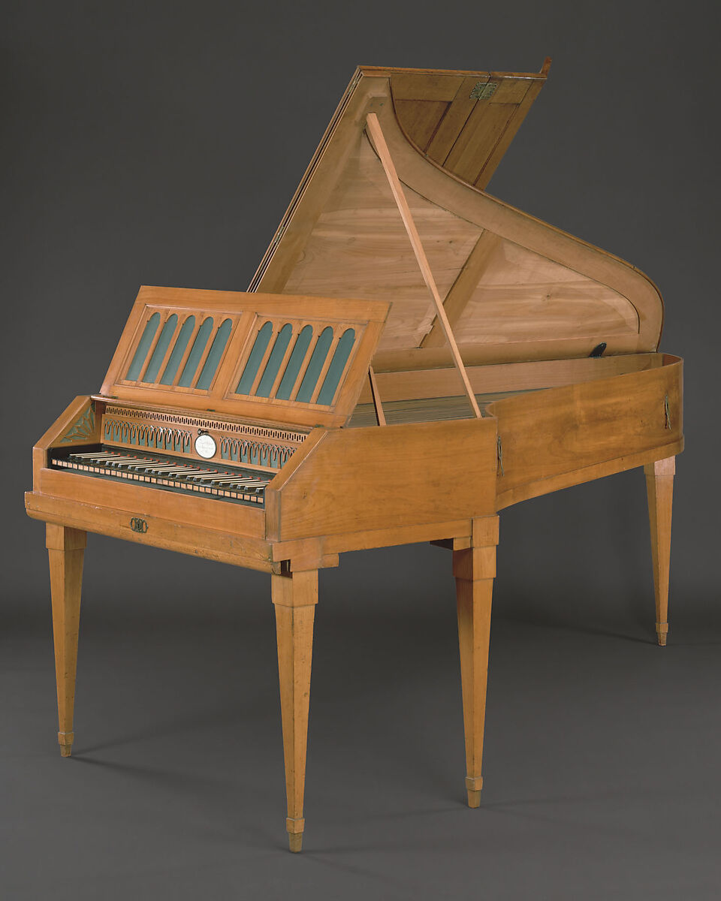

第2章｜ピアノはどのように進化したのか？
この章の目次
モーツァルトからベートーヴェン、ショパン、リストへ。音楽家たちと歩んだ300年。
2-1. モーツァルトのピアノは、今よりずっと小さかった
モーツァルト（1756〜1791）が活躍した18世紀後半、ピアノはまだ新しい楽器でした。
現在のピアノは通常88鍵ですが、18世紀後半のウィーン式ピアノには、61鍵、つまり5オクターブ程度のものがありました。
モーツァルトが所有していたフォルテピアノも61鍵。署名や年記はありませんが、国際モーツァルテウム財団は、ウィーンの製作者アントン・ヴァルターが1782年頃に作ったとみています。楽器は現在もザルツブルクに残されています。
当時のピアノは、現在のグランドピアノより軽量で、音も比較的繊細でした。
ただし、モーツァルト時代のピアノがすべて同じ音色だったわけではありません。製作者や地域によって構造が異なり、楽器の改良も進んでいました。
モーツァルトは若い頃、ヨハン・アンドレアス・シュタインが製作したピアノのタッチや反応の良さを高く評価しています。
ちょっと意外な話
当時のウィーン式ピアノには、現代のダンパーペダルに当たる操作を膝で行うものがありました。
さらに、モーツァルトの父レオポルトの1785年の手紙には、息子がピアノの下に置く大きな足鍵盤を作らせたことが記されています。

写真 The Metropolitan Museum of Art（Open Access・CC0）。 写真の出典
- 18世紀末の例
- 61鍵。木を主体にした構造。ホフマン製の例では膝レバーでダンパーを持ち上げる。
- 現代のグランドの例
- 標準は88鍵。鋳鉄フレームで弦の張力を支える。足元のペダルで響きや音色を調節。
図版 Kussoon制作。 図解の参考資料
2-2. ベートーヴェンの時代、ピアノは大きく変わった
ベートーヴェン（1770〜1827）が活躍した時代は、ピアノの改良が急速に進んだ時代でもありました。
モーツァルトの時代より音域が広がり、音量も増大。鍵盤の手応えや、音を響かせる能力も変化していきます。
当時のピアノ製作者には、ウィーンのヴァルターやシュトライヒャー、イギリスのブロードウッドなどがいました。
ベートーヴェンも複数のメーカーのピアノを使いました。1817年にはブロードウッドからグランドピアノを贈られ、その楽器は翌1818年にウィーンに届きました。
ここで興味深いのは、ベートーヴェンの32曲のピアノソナタが、ピアノという楽器自体の変化と重なっていることです。
初期の作品と後期の作品では、利用できる鍵盤の音域も違いました。
つまり、彼のピアノ曲を理解するには、作曲された当時の楽器を知ることも大切なのです。
2-3. 1821年、ピアノに革命が起こった
ピアノの発展を語るうえで、1821年は重要な年です。
フランスのピアノ製作者セバスチャン・エラールが、素早い同音連打を容易にする「ダブルエスケープメント」の機構を特許化しました。
通常、ピアノの鍵盤を押すと、ハンマーが弦を打ちます。
しかし、再び同じ音を出すには、ハンマーを次の打弦に備えた位置へ戻さなければなりません。
エラールの機構は、鍵盤を完全に元の高さまで戻さなくても、次の打弦ができるようにしたのです。
これにより、素早い同音連打や細かい装飾音を、より安定して演奏できるようになりました。
現在のグランドピアノのレペティション機構は、この発明の系譜にあります。実際の動きは第3章で見てみましょう。
2-4. ショパンとリストが求めた、さらに豊かな表現力
フレデリック・ショパン
1810〜1849年
フランツ・リスト
1811〜1886年
19世紀には、ピアノ音楽が大きく発展しました。
ショパンは繊細な音色や歌うような旋律を重視し、プレイエル製のピアノを好みました。
一方、リストは華麗な技巧と大きな音響効果で聴衆を魅了し、ベヒシュタインやベーゼンドルファーなどのピアノを使用しました。
ピアノは、家庭や貴族の邸宅で楽しむ楽器から、大きな演奏会場で存在感を発揮する楽器へと成長していきます。
そして演奏家の要求が高まるほど、製作者たちにも新しい技術が求められました。
2-5. 木の骨組みだけでは支えきれなくなった
現代のグランドピアノのふたを開けると、弦の下や周囲に、金色などに塗装された大きな金属部品が見えます。
これは「鋳鉄フレーム」です。鉄骨とも呼ばれます。
初期のピアノでは木製の構造が中心でしたが、音量を大きくするために弦を強く張るようになると、より頑丈な構造が必要になりました。
そこで金属の支柱やフレームが導入され、やがて一体鋳造のフレームが普及していきます。アメリカでは1825年、アルフィアス・バブコックがスクエアピアノ用の一体型鋳鉄フレームの特許を取りました。その後、チッカリングやスタインウェイなどがフレームや弦の配置を改良していきます。
低音弦とほかの弦を段違いに交差させる「交差弦」や、革に代わってフェルトを使うハンマーも19世紀の改良の一部です。現在のピアノの姿は、こうした多くの改良が重なってできました。
現在のピアノが非常に重いのは、単に大きな木製家具だからではありません。
強く張られた多数の弦を支え、安定した音を出すための頑丈な構造を持っているからです。
2-6. グランドピアノとアップライトピアノ、なぜ二種類ある？
グランドピアノ
弦をほぼ水平に張る。演奏機構には重力も利用され、細やかなコントロールや素早い連打に適する。
アップライトピアノ
弦をほぼ垂直に張る。奥行きを小さくでき、住宅や学校などに設置しやすい。
グランドピアノのように弦を水平に配置する形式は、ピアノの誕生当初から存在しました。
一方、アップライトピアノが家庭向けの実用的な楽器として普及したのは19世紀です。
限られた空間でピアノを楽しめるようになったことは、ピアノの大衆化にもつながりました。
なお、「アップライトだから音が悪い」というわけではありません。大きさや設計、状態、演奏環境によって、音の特徴や演奏のしやすさは異なります。
2-7. 61鍵から88鍵へ
鍵盤数はどのように増えてきた？
| 時代 | 鍵盤数の例 |
|---|---|
| 18世紀後半（モーツァルトの時代） | 61鍵 |
| 19世紀（音域がさらに広がる） | 80鍵超の例も |
| 現代の一般的な標準 | 88鍵 |
時代の代表例を比較したものです。実際の鍵盤数はメーカーやモデルによって異なり、一斉に切り替わったわけではありません。
初期のピアノには、現在ほど広い音域はありませんでした。
しかし、作曲家たちがより高い音、より低い音を求めるようになると、製作者は鍵盤の数を増やしていきました。
19世紀には80鍵を超えるピアノが登場し、その後、88鍵が一般的な標準として定着しました。
ただし、88鍵より多いピアノも存在します。
この話は、第6章「なぜ鍵盤は88個なのか？」で詳しく取り上げます。
- 1700年ごろクリストフォリが実用的なハンマー式のピアノを開発
- 18世紀末モーツァルトの時代には5オクターブ程度の例
- 1821年エラールが反復を容易にする機構を特許化
- 1825年バブコックがスクエアピアノ用の一体型鋳鉄フレームを特許化
- 1868年88鍵のスタインウェイの現存例
- 1890年代ごろ〜20世紀現在につながる音域が確立し、標準として普及
図版 Kussoon制作。 図解の参考資料
2-8. 現代のピアノは、完成した楽器なのか？
現代のアコースティックピアノには、18世紀や19世紀に考案された技術が数多く残っています。
しかし、その後も弦やハンマー、響板の設計、製造精度などの改良は続いています。
さらに、鍵盤の動きを記録して再現する自動演奏ピアノや、アコースティックの機構と電子技術を組み合わせたハイブリッドピアノも登場しました。
つまり、基本的な仕組みが成熟した現在も、ピアノの進化は終わっていないのです。
第2章のまとめ
ピアノは、最初から現在の姿だったわけではありません。
モーツァルトが使った小型の楽器から、ベートーヴェンの頃に音域や響きの幅が広がり、ショパンやリストの時代には豊かな表現と高度な演奏技術に応える楽器へと進化しました。
楽器の進化が音楽を変え、音楽家たちの要求がさらに楽器を進化させたのです。
参考資料
- 国際モーツァルテウム財団｜モーツァルトのフォルテピアノと父の書簡
- 民音音楽博物館｜1795年製アントン・ワルター
- ベートーヴェン・ハウス｜ブロードウッドの贈り物
- グライフェンベルガー楽器学研究所｜エラールの機構史
- ショパン協会｜ショパンとピアノ
- ヤマハ｜ピアノの発達と大作曲家
- スミソニアン｜バブコックのスクエアピアノと1825年の特許
- スミソニアン｜Chickering & Sons資料
- スミソニアン｜所蔵鍵盤楽器目録
- メトロポリタン美術館｜1868年製スタインウェイの88鍵グランド